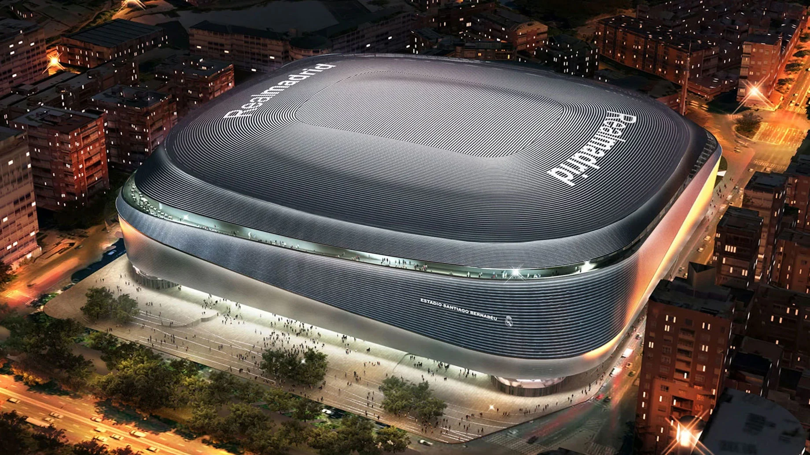

Bernabéu, (Spanish: El Bernabéu [βeɾnaˈβew] ⓘ) formerly known as Santiago Bernabéu Stadium, is a retractable roof football stadium in the district of Chamartín, Madrid, Spain.
With a seating capacity of 83,186[7] following its extensive renovation completed in late 2024, the stadium has the second-largest seating capacity for a football stadium in Spain,
behind Camp Nou in Barcelona. It has been the home stadium of Real Madrid since its completion in 1947.
Named after former Real Madrid player and president Santiago Bernabéu
(1895–1978), the stadium is one of the world's most famous football venues. It has hosted the final of the European Cup/UEFA Champions League on four occasions: in 1957, 1969,
1980 and 2010.[8] The stadium also hosted the second leg of the 2018 Copa Libertadores Finals, making Santiago Bernabéu the only stadium to host finals of both competitions.[9]
The final matches for the 1964 European Nations' Cup and the 1982 FIFA World Cup were also held at the Bernabéu, making it the first stadium in Europe to host both a UEFA Euro
final and a FIFA World Cup final.
History
Origins and construction
In the early 1940s, the old Campo de Chamartín had become too small for the growing population of Madrid and the
increasing popularity of football.
